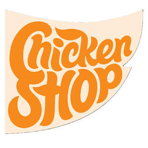

Trade Mark Journal No.2025/024 13 June 2025
UK00004212451 2 June 2025 (29,30)

- Class 29
- Meat, fish, poultry and game; meat extracts; preserved, frozen, dried and cooked fruits and vegetables; jellies, jams, compotes; eggs; milk and milk products; edible oils and fats; oil coatings for meat, fish, poultry, game or vegetable products; frozen prepared meals consisting predominantly of meat, fish, poultry, game or vegetables; chilled foods consisting predominately of meat, fish, poultry, game or vegetables; chilled meals made from meat, fish, poultry, game or vegetables; cooked meals consisting principally of meat, fish, poultry, game or vegetables; frozen ready cooked meals consisting predominantly of meat, fish, poultry, game or vegetables fish cakes; frozen fish cakes; fish fillets; frozen fish fillets; fish fingers; frozen fish fingers; fish products; fish products being fresh; fish products being frozen; fish products being preserved; fish with chips; frozen cooked fish; frozen fish; scampi; frozen scampi; steaks of fish; frozen steaks of fish; shelled prawns; chicken; chicken pieces; cooked chicken; frozen chicken; deep frozen chicken; dehydrated chicken; fried chicken; frozen fried chicken; pieces of chicken for use as a filling in sandwiches; chicken nuggets; chicken kievs; frozen chicken kievs; frozen vegetables; frozen vegetables packed in single portions; frozen pre-prepared mixes of vegetables, nuts and/or pulses; soups; burgers; frozen burgers; meat products being in the form of burgers; vegetable burgers; frozen vegetable burgers; vegetarian burger patties; vegetarian sausages; vegetarian meatballs; tofu; soya [prepared]; whey; steaks of meat; frozen steaks of meat; potato snack products in the form of fried pieces; frozen potato snack products in the form of fried pieces; frozen potato products; vegetable and potato flakes; potato and vegetable croquettes; fried potatoes; fried vegetables; prefried and frozen French fries; potato and vegetable rösti; shepherd's pie; frozen shepherd's pie; preserved, frozen, dried and cooked nuts and pulses; frozen prepared meals consisting predominately of vegetables, nuts and/or pulses; chilled prepared meals consisting predominately of vegetables, nuts and/or pulses; falafel; food products made from vegetable protein; food products made from nut protein; food products made from milk protein; food products made from egg protein; food products made from soya protein; food products made from whey protein; food products made from marine protein; food products made from fungi protein; processed pulses; formed textured vegetable protein for use as a meat substitute.
- Class 30
- Coffee, tea, cocoa and artificial coffee; rice; tapioca and sago; flour and preparations made from cereals; bread, pastry and confectionery; ices; sugar, honey, treacle; yeast, baking-powder; salt; mustard; vinegar, sauces (condiments); spices; seasoned coatings for meat, fish, poultry, game or vegetable products; breadcrumb coatings for meat, fish, poultry, game or vegetable products; seeded coatings for meat, fish, poultry, game or vegetable products; ice; sauces for frozen fish; sauces for chicken; frozen pastry stuffed with meat or vegetables; frozen pastry stuffed with vegetables, nuts, pulses and/or grains; frozen prepared rice with seasonings and vegetables; bread rolls containing burgers; chilled or frozen ready meals consisting principally of rice, pasta, bread or pastry; pies containing fish; pies containing game; pies containing meat; pies containing poultry; pies containing vegetables; pies containing vegetables, nuts, pulses and/or grains; waffles; frozen waffles; deep frozen pasta; ready cooked meals consisting wholly or substantially wholly of pasta; frozen ready cooked meals consisting wholly or substantially wholly of pasta; frozen pre-prepared mixes of grains; frozen prepared meals consisting predominately of grains; chilled prepared meals consisting predominately of grains.
Nomad Foods Europe Ipco Limited
Representative: Haseltine Lake Kempner LLP